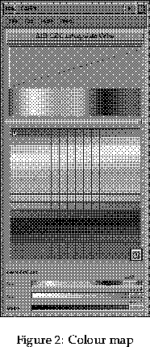

Next: 5.5 Where to go Up: 5 About BOB Previous: 5.3 Viewing your data
There are options in the Mode menu which will alter the image (auto alpha, maximum value etc.), however the most useful way of getting the most from the image is to alter the colour and alpha maps.
These maps are used to alter the colour and opacity (alpha) display. They can be found in the File menu at the top of the main window. Choose the Colour map editor or Alpha map editor option.

These maps are very simple to use. Both maps contain a grid of boxes. Each box in the grid corresponds to a data value between 0 and 255, 0 being the top left box, and 255 the bottom right box. By clicking on these you can then alter the properties of the value that corresponds to that box. The colour map has two options for altering colours (contained in the Mode menu)
At the bottom of the map a slider will appear corresponding to the above styles, for example in RGB red, green and blue sliders will appear. These can be altered in the usual manner. The alpha map is similar but this time an Alpha slider appears. Changes in these maps are automatically passed onto BOB. In the menus at the top of the icol display there are various other options, undo, snap etc. It is suggested that the user explores these options to make best use of the maps.
Next: 5.5 Where to go Up: 5 About BOB Previous: 5.3 Viewing your data